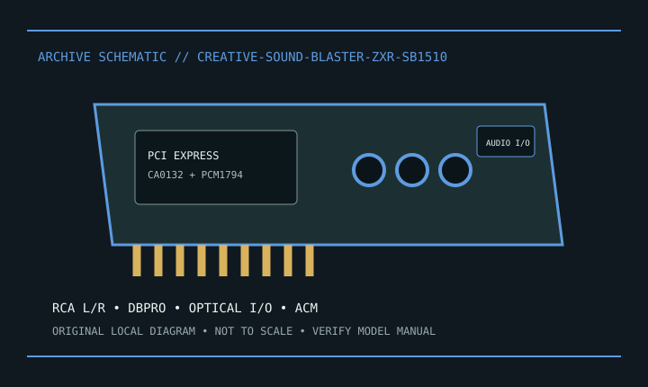

[ INDIVIDUAL MODEL // SOUND HARDWARE ]
Creative Sound Blaster ZxR (SB1510)
SB1510 PCIe card with DBpro daughterboard; stereo RCA output and expanded digital/analog I/O.

Model-specific specifications
| Exact model / identity | SB1510 PCIe card with DBpro daughterboard; stereo RCA output and expanded digital/analog I/O. |
|---|---|
| Audio processor / codec / DAC | Creative Sound Core3D CA0132 audio processor and Burr-Brown/ TI PCM1794 DAC on the main card. DBpro is a separate daughterboard. |
| Channels / resolution / sample rate | Stereo analog output on the main card; multichannel through supported digital/software routes. Creative documents up to 24-bit/192 kHz playback; other paths have lower limits. |
| Analog and digital ports | Main card has stereo RCA, headphone, mic and optical S/PDIF I/O. DBpro adds RCA stereo and optical I/O; Audio Control Module adds desktop headphone/mic access. |
| Slot / host interface | PCI Express x1 main card; DBpro connects via supplied inter-card cable. |
| Operating-system support | Creative archives Windows driver/software for the product era. Check model support for exact OS packages; current OS compatibility is not guaranteed. |
Compatibility & preservation
SB1510 is ZxR, not Z or Zx. DBpro, cable and control module are separate parts; missing pieces remove their I/O.
- Photograph the card label, board revision, bracket connections and included accessories before service.
- Retain the exact driver, firmware and operating-system version known to work with this model.
- Confirm slot fit, connector pinout, breakout hardware, channel mode and supported sample rate before integration.
Manufacturer sources
- Creative Sound Blaster ZxR — official product supportManufacturer product, technical specification, or model manual source.
- Creative Sound Blaster ZxR — official manualsManufacturer product, technical specification, or model manual source.